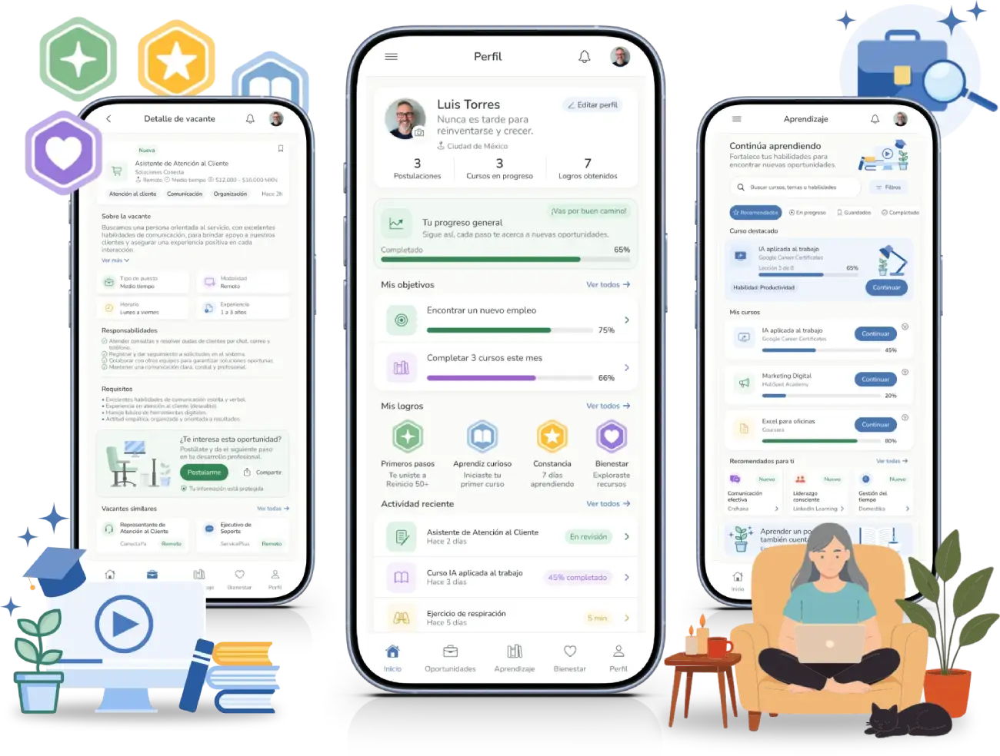
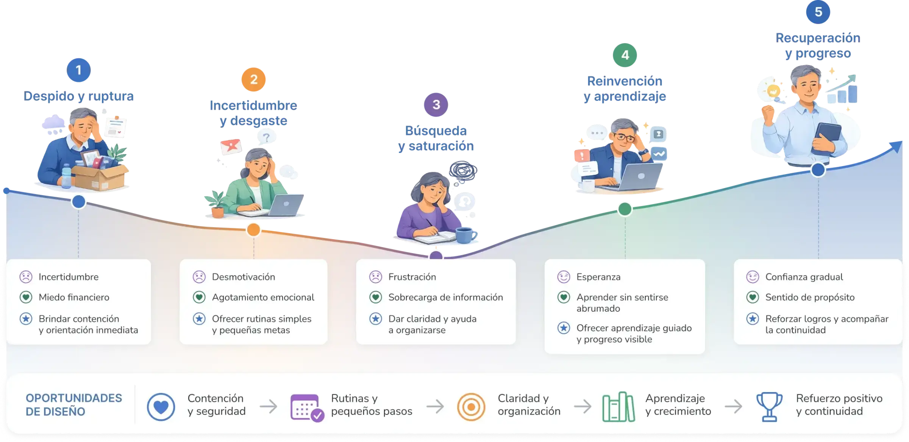
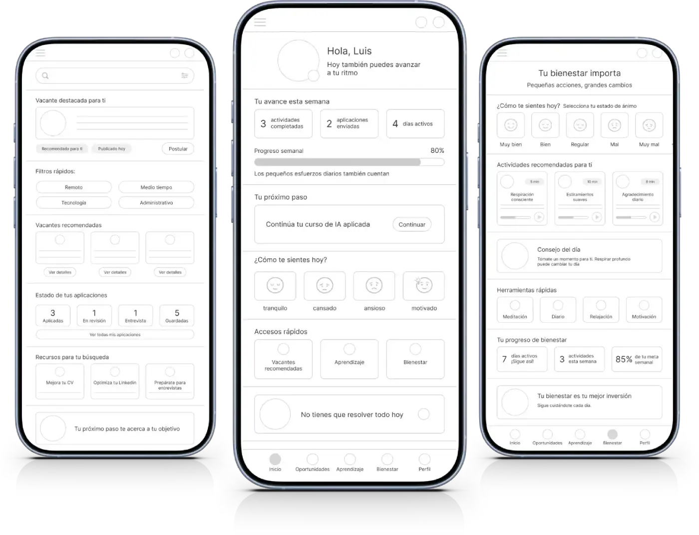
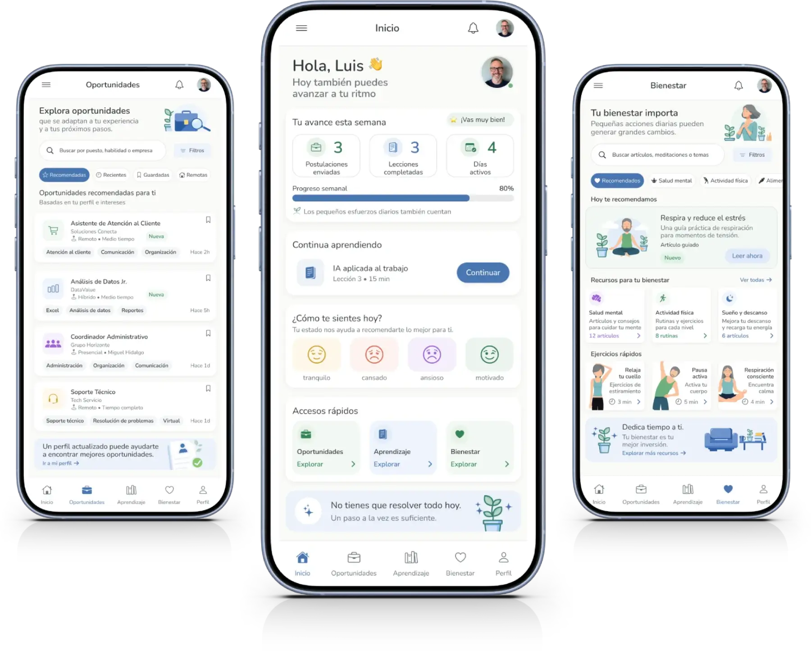
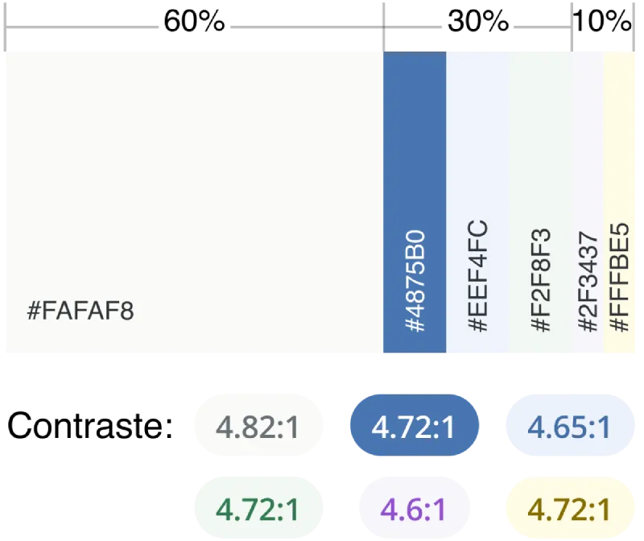
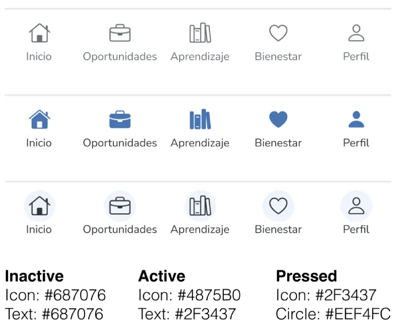
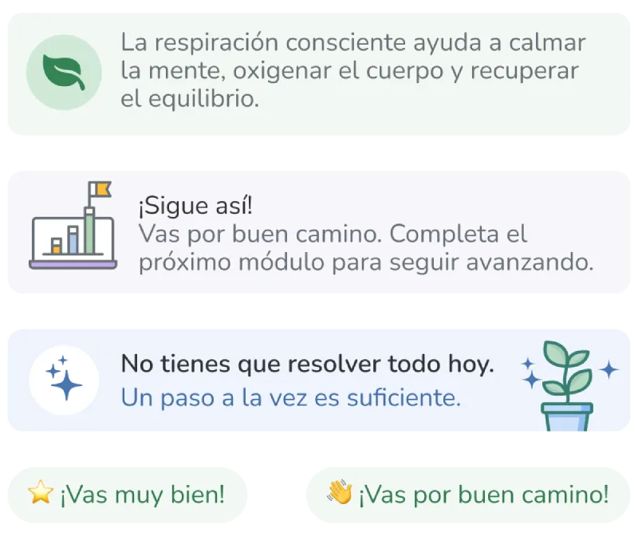

Personas reinventándose
Personas con experiencia enfrentando cambios laborales y tecnológicos.
UX/UI Case Study
Investigación de usuarios y diseño de producto
Acompañamiento a personas mayores de 50 años en su transición laboral, integrando oportunidades, aprendizaje y bienestar emocional en un flujo digital accesible.
Ver proceso
La solución
Reinicio 50+ reúne oportunidades laborales, aprendizaje y bienestar emocional en una sola experiencia diseñada para acompañar a personas mayores de 50 años durante una transición profesional.
El reto
Perder el empleo después de los 50 años implica mucho más que encontrar trabajo. También aparecen incertidumbre económica, desgaste emocional y la sensación de no saber cuál debería ser el siguiente paso.
Investigación
A través de entrevistas y ejercicios de empatía identificamos que las personas necesitaban claridad, acompañamiento y pequeñas acciones alcanzables para recuperar la confianza y mantener el impulso.
Personas con experiencia enfrentando cambios laborales y tecnológicos.
Desde el despido inicial hasta la recuperación gradual de confianza.
Claridad, acompañamiento y pequeños avances sostenibles.
Recorrido emocional
La investigación reveló que la búsqueda laboral es un proceso cambiante, marcado por emociones, obstáculos y oportunidades distintas en cada etapa.

Arquitectura de información
La estructura de la aplicación fue diseñada para reducir la saturación mental y acompañar a las personas mediante pequeños pasos claros y alcanzables.
Progreso, próximos pasos y acompañamiento diario.
Vacantes relevantes y seguimiento de aplicaciones.
Cursos y herramientas para mantenerse vigente.
Recursos emocionales y hábitos sostenibles.
Objetivos, logros y seguimiento del progreso.
Wireframes
Los wireframes ayudaron a traducir los hallazgos de investigación en una experiencia simple, priorizando claridad, acompañamiento y pequeños pasos alcanzables.
Explorar wireframes:
Ver flujo completo
Prototipo final
El diseño final combina oportunidades laborales, aprendizaje y bienestar emocional para acompañar a las personas durante una transición profesional compleja, ofreciendo herramientas prácticas y un enfoque más humano.
Explorar prototipo interactivo:
Ver prototipo
Sistema visual
El sistema visual buscó generar confianza y reducir la sensación de saturación mediante el uso de colores suaves, componentes consistentes y jerarquías claras.

Paleta de alto contraste WCAG para legibilidad y confort visual.
Escala tipográfica jerarquizada para facilitar la lectura en pantalla.

Librería UI modular en Figma para mantener paridad con código.

Microcopia clara y empática para orientar sin generar presión.
Impacto esperado
Aunque se trata de un proyecto conceptual, la propuesta fue diseñada para reducir la sensación de saturación y ayudar a las personas a avanzar mediante pequeñas acciones sostenibles.
Priorizar una sola acción a la vez disminuye la desorientación.
Integrar bienestar y oportunidades genera una experiencia más humana.
Los pequeños avances refuerzan la motivación y favorecen la continuidad.
Aprendizajes
Este proyecto reforzó la importancia de escuchar antes de proponer soluciones. Comprender las emociones y necesidades reales permitió diseñar una experiencia más humana, accesible y significativa.
Las entrevistas revelaron necesidades más allá de encontrar empleo.
Priorizar pequeñas acciones ayudó a disminuir la sensación de saturación.
Diseñar considerando el bienestar emocional fortaleció la experiencia.
“A veces, volver a empezar no requiere grandes cambios, sino la compañía adecuada para dar el siguiente paso.”
Este proyecto fue posible gracias a las personas que participaron en las entrevistas y pruebas de usabilidad. Su retroalimentación ayudó a mejorar la experiencia en cada iteración.
Para proteger la privacidad de las personas participantes, sus nombres se presentan mediante alias.
Me encantó formar parte de este proyecto y saber que mi opinión ayudó a mejorar la experiencia. Fue muy gratificante ver cómo cada cambio respondía a las necesidades de las personas. Espero que este proyecto pueda ayudar a muchas más en una situación similar.
Gracias por incluirme en este proceso. Fue un gusto aportar mi opinión y ver cómo varios de mis comentarios se reflejaron en el resultado final. El proyecto evolucionó de una gran idea a una experiencia clara, intuitiva y funcional.